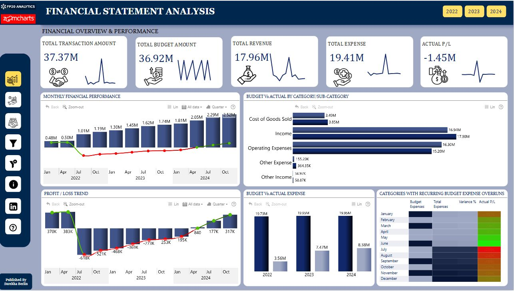
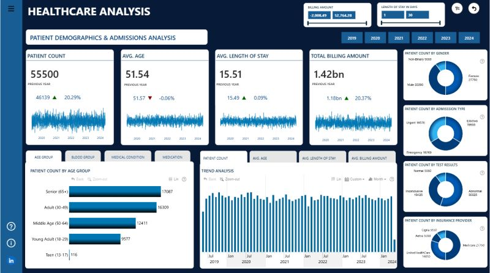
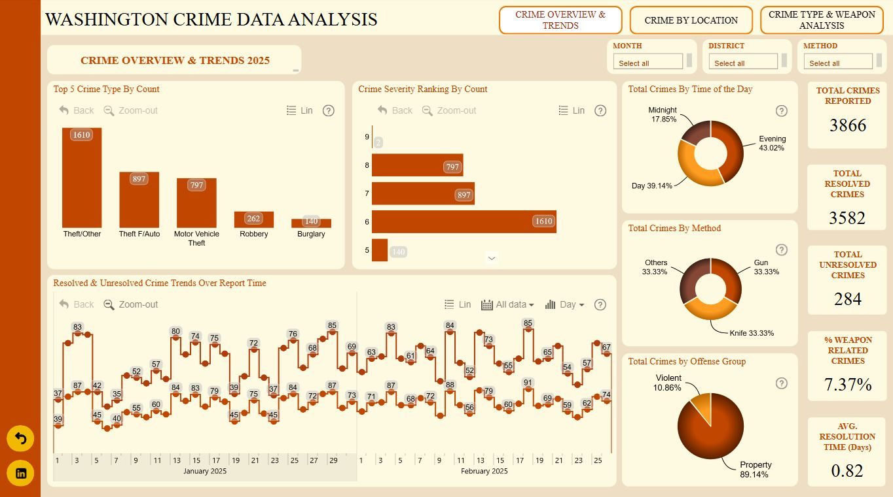
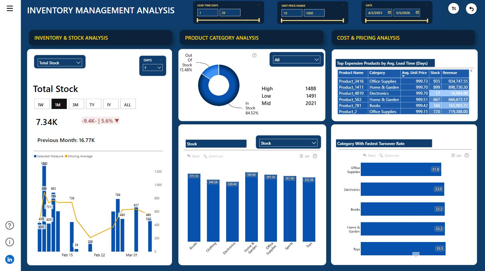
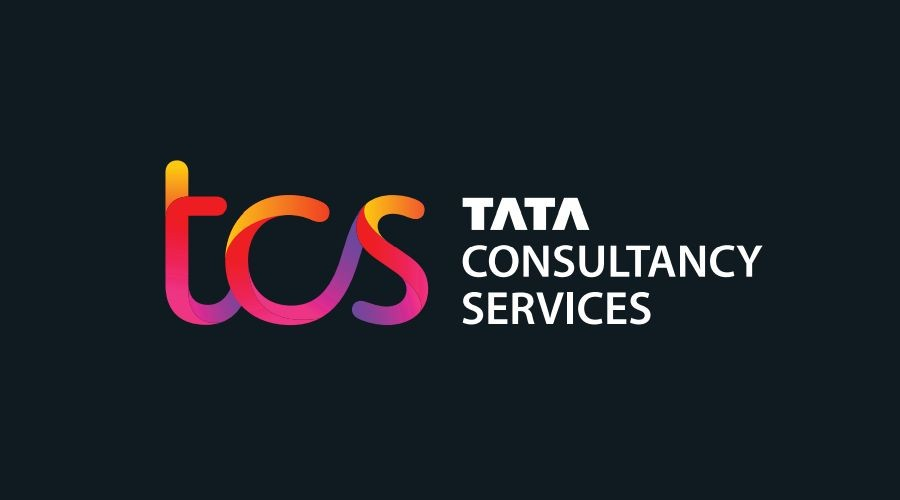

I am a self-taught data scientist with expertise in data analysis, machine learning, and statistical modeling. My skills are honed through hands-on projects and continuous learning, allowing me to turn complex data into actionable insights. I hold a Master’s degree in Electrical and Computer Science, which supports my proficiency in advanced analytics and data-driven decision-making.
Specializing in machine learning model development and dynamic data visualization using Power BI and Tableau, I excel in creating intuitive dashboards that drive business intelligence. With experience in Microsoft Azure.
Proficient in Python, SQL, TensorFlow, and scikit-learn, I am dedicated to leveraging the latest advancements in data science and machine learning to deliver impactful results and bridge the gap between technical solutions and strategic business needs.
This dataset shows the Battery Electric Vehicles (BEVs) and Plug-in Hybrid Electric Vehicles (PHEVs) that are currently registered through the Washington State Department of Licensing (DOL). The source of the dataset is shared by the US government.
This dataset provides detailed information on U.S. airline flight routes, fares, and passenger volumes from 1993 to 2024, including metrics like cities, distances, and passenger counts, making it a valuable resource for analyzing air travel trends over three decades.
A logistics dashboard analysis provides a visual overview of key metrics related to supply chain operations, such as delivery times, order accuracy, and transportation costs.It helps identify trends, monitor real-time data, and assess operational efficiency.
Airbnb has facilitated unique travel experiences for guests and hosts since 2008. This dataset provides details on listing activity and metrics in New York City for 2019, offering valuable insights for analyzing market trends and performance.
The telecom industry is highly competitive, making customer retention crucial as customers can easily switch providers. With the cost of acquiring new customers significantly higher than retaining existing ones, preventing churn has become a primary focus.

Healthcare Sector, analyzing a comprehensive dataset of 55,500 patients admitted to 10 major hospitals across the U.S. between 2019 and 2024. It was an incredible deep dive into real-world healthcare analytics using Power BI!.

Healthcare Sector, analyzing a comprehensive dataset of 55,500 patients admitted to 10 major hospitals across the U.S. between 2019 and 2024. It was an incredible deep dive into real-world healthcare analytics using Power BI!.

Healthcare Sector, analyzing a comprehensive dataset of 55,500 patients admitted to 10 major hospitals across the U.S. between 2019 and 2024. It was an incredible deep dive into real-world healthcare analytics using Power BI!.

Healthcare Sector, analyzing a comprehensive dataset of 55,500 patients admitted to 10 major hospitals across the U.S. between 2019 and 2024. It was an incredible deep dive into real-world healthcare analytics using Power BI!.

This Crime Analytics report highlights crime trends, locations, and weapon-related offenses. It identifies high-crime areas and tracks weapon trends to inform targeted interventions. These insights support proactive measures for safer communities.

This Power BI project offers insights into stock trends, supplier performance, and geographic data. It highlights key inventory metrics, supplier restocking patterns, and regional trends across countries like Germany, Belgium, Poland, and the UK.

This Power BI project offers insights into In 2020, 74.63% of shipments were delayed. The busiest route was Gurgaon to Kanchipuram, and Kanchipuram to Ahmedabad had the longest delivery times. Pune to Kanchipuram had the highest on-time rate (42.47%).
This dataset shows the Battery Electric Vehicles (BEVs) and Plug-in Hybrid Electric Vehicles (PHEVs) that are currently registered through the Washington State Department of Licensing (DOL).
This data set was created to list all shows available on Netflix streaming, and analyze the data to find interesting facts. This data was acquired in July 2022 containing data available in the United States.
A logistics dashboard analysis provides a visual overview of key metrics related to supply chain operations, such as delivery times, order accuracy, and transportation costs.It helps identify trends, monitor real-time data, and assess operational efficiency.
This Power BI dashboard displays key metrics from emergency department admissions, including wait times, patient satisfaction, and referral trends, helping to identify improvement areas and enhance the ER experience.
The Global Sustainable Energy Data project offers insights into renewable energy sources and consumption patterns, analyzing trends in production and policies. It aims to support informed decision-making and promote sustainable energy practices.
The telecom industry is highly competitive, making customer retention crucial as customers can easily switch providers. With the cost of acquiring new customers significantly higher than retaining existing ones, preventing churn has become a primary focus.
Trip Advisor is a travel platform that features user-generated reviews and ratings for hotels, restaurants, and attractions worldwide, helping travelers plan their trips with real insights and recommendations.
A logistics dashboard analysis provides a visual overview of key metrics related to supply chain operations, such as delivery times, order accuracy, and transportation costs.It helps identify trends, monitor real-time data, and assess operational efficiency.
Airbnb has facilitated unique travel experiences for guests and hosts since 2008. This dataset provides details on listing activity and metrics in New York City for 2019, offering valuable insights for analyzing market trends and performance.
The telecom industry is highly competitive, making customer retention crucial as customers can easily switch providers. With the cost of acquiring new customers significantly higher than retaining existing ones, preventing churn has become a primary focus.

The TCS analysis evaluates key performance indicators, project outcomes, and client satisfaction to assess operational efficiency and market position.It aims to identify growth opportunities and enhance service delivery in the IT and consulting sectors.
Airbnb has facilitated unique travel experiences for guests and hosts since 2008. This dataset provides details on listing activity and metrics in New York City for 2019, offering valuable insights for analyzing market trends and performance.

The British Airways analysis examines key operational metrics, customer satisfaction, and financial performance to identify trends and areas for improvement. It aims to enhance the overall travel experience and optimize service efficiency.

BCG (Boston Consulting Group) is a global management consulting firm that assists organizations in solving complex business challenges through strategic insights and data-driven solutions, driving growth and performance across various industries.

Commonwealth Bank is a major Australian financial institution offering personal and business banking, investment services, and insurance, focusing on innovation and customer service.

PwC (PricewaterhouseCoopers) is a global professional services firm providing audit, tax, and consulting services to help organizations improve performance and manage risks.

As part of Quantium's retail analytics team, we're analyzing customer behavior for chips. Our focus is on demographics and purchasing patterns to identify key customer segments. This will help the Category Manager optimize product offerings and marketing strategies to boost sales and customer satisfaction.